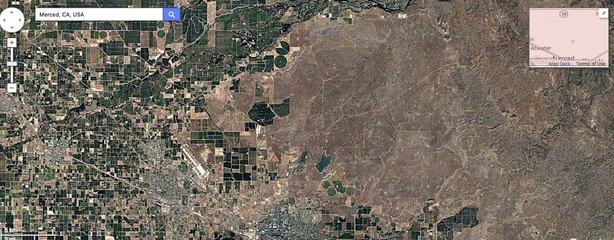

In 2012, CITRIS Aviation launched at UC Merced with the opening of the MESA Lab
(for Mechatronics, Embedded Systems, and Automation, a multidisciplinary collaborative
space that focuses heavily on airborne research: building, flying, and modifying
unmanned aerial systems (UAS) as well as aerial crop monitoring and analysis
make up a large part of ongoing projects.
The UC Merced campus is distinguished as the UC Center of Excellence on Unmanned
Aircraft System Safety, offering expertise and ensuring regulatory compliance for
UAS operations within the entire University of California system. The Center is
authorized to grant certain forms of approval for UAS operations in the US via
the Federal Aviation Administration. The UC Center of Excellence on UAS Safety
specializes in dedicated training for operators, researchers and technical users.
CITRIS Aviation specializes in gathering scientific data using unmanned aerial vehicles,
especially in the fields of landscape ecology and agriculture. We emphasize through research,
consultation and courses developing practical solutions, promoting the use of timely aerial data,
and understanding information.

Drones are in the process of revolutionizing data acquisition in the fields of
surveying, precision agriculture, construction, firefighting, and even accident
forensics. They are also becoming an invaluable tool for cinematographers and
real estate services providing a low-cost and minimally intrusive alternative to
helicopters. Increasingly affordable and user-friendly drones have also opened
the field to a host of hobbyists and enthusiasts, opening up a burgeoning consumer
market, and speeding up the rate of innovation and development. As drones find use
in ever more applications, regulations have been developed in order to assure safe
operation and integrate drones into the national airspace.
UAS Safety offers expertise and ensures regulatory compliance for UAS operated
within the entire University of California
system. It also provides support and training for risk management and the safe
operation. In addition, the Center is also authorized to grant certain forms of
approval for UAS operations in the US via the Federal Aviation Administration.
Introduction to Drone Safety and Regulations This base course is classroom only,
and provides students with the tools to pass the CFA Part 107 exam, which is
required to fly drones commercially. Introduction to Safe Drone Operation This
course will cover the basics of drone piloting, mission planning and field operations.
Specialized Courses Specialized topics such as aerial mapping, environmental sensing,
and cinematography will be offered on a demand basis, or other specialized courses
can be tailored to the needs of specific groups.
Remote Sensing Using Google Earth Engine

This two-day workshop will enable you to use Google Earth Engine API to perform basic
digital image processing of remotely sensed imagery and perform more advanced geospatial
analysis. Users who complete this course will have an intermediate understanding of the
Google Earth Engine coder API and will be able to understand the capabilities and limitations
of the Google Earth Engine. Be prepared for the course using the following requirements.

UC Merced’s MESA (Mechatronics, Embedded Systems and Automation) Lab is a
multidisciplinary collaborative space that focuses
heavily on airborne research: building, flying, and modifying unmanned aerial
systems
(UAS) as well as aerial crop monitoring and analysis make up a large part of
ongoing
projects. MESA Lab collaborates with partners throughout the San Joaquin valley
and
beyond, including private agricultural growers, the USDA, PG&E and NASA/JPL.
Research topic include: Mechatronics UAS-based remote sensing Cyber-Physical
Systems Modeling and Control of Renewable Energy
Systems Applied Fractional Calculus.
Learn More